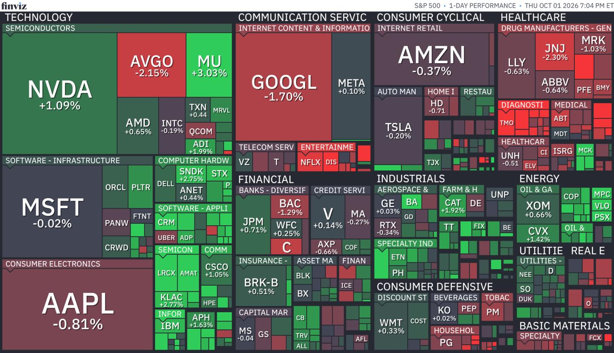

2026年10月2日 星期五（晨間更新）
🇭🇰 今日（10/2）港股復市交易；A股黃金週休市、北水續停 · 美股／債為10/1週四收市（Q4首個交易日） · 港股為9/30收市 · 油／金／匯／BTC為10/1收市或今晨最新 · 📅 10年債息盤中5.342%創2002年新高後全線回落；10月加息機率由週一約70%急降至約26%
📊 市場決議
Q4首日：早盤債息創高壓抑→午後倒轉，四大指數由黑翻紅：標普收7,666.45（+0.19%）、納指26,871.60（+0.04%）、道指50,926.56（+0.04%）、費半12,829.00（+1.59%領跑）｜關鍵轉向：10年債息盤中5.342%（2002年高）後倒跌收5.24%（-5bp）、2年4.78%（-10bp）、30年5.61%（-3bp）＝全曲線首見齊回落｜10月加息機率約70%→約26%｜油價103.35（+5.4%、三航母中東溢價）｜恒指9/30收24,613.27（+0.37%）、今日復市
🎯 今日定調
「債息鬆一日、科技搶反彈；單日轉向定趨勢確認」：MU 1097.39（+3.03%）業績超預期帶半導體翻溫，但「盤後紋絲不動」暴露頂峰恐懼——市場問緊「新常態定最後高潮」（FB解密）；聯儲副主席Jefferson轉口「金融環境已自行收緊、唔使急」（王董）＝觀望模式；恒指今日復市：假期長端回落＋美股微升＝補價環境偏正面，24,500-24,300分注區執行
⚖️ 風險天平
偏多：債息全線回落（2年-10bp最勁）、加息機率26%、MU下季指引600-630億大超預期、費半+1.59%、初領失業金四連降｜偏空：布蘭特+5.4%中東再升級（五角大樓擬第三航母＋Trump選後升級轟炸言論）、Nike警告本財年銷售高單位數下滑、ACCV上市二日累瀉、AVGO -2.15%（420億融資Anthropic＝供應商融資風險）、10年5.24%仍歷史高位｜中性：金價4,210微彈未過4,250、BTC 84.8K回暖、北水續停
💹 市場定價
道指50,926.56（+0.04%）｜標普7,666.45（+0.19%）｜納指26,871.60（+0.04%）｜費半12,829.00（+1.59%）
布蘭特103.35（+5.4%、Bloomberg快照）｜期金4,210.1（+0.56%）｜10年5.24%（-5bp、盤中5.342創高後倒跌）＋2年4.78%（-10bp）＝2s10s走闊至46bp
美元102.04（+0.58%）｜日圓157.56（10/1收、今晨約157.8）｜比特幣84,761（+1.42%）｜VIX 16.39（+0.31%、盤中17.59衝高後收窄）
📝 一句話
「債息盤中見頂倒跌＋加息預期急凍＝Q4開局最想見嘅組合；但單日轉向唔等於結構逆轉——5.3回測成功先講期限溢價見頂（FB解密）；恒指今日復市：24,500-24,300首注、失24,300減、收復25,000轉強」
🔴 債息歷史級盤中衝高後倒跌——10年5.342%（2002年高、Q3錄本世紀最大季升幅）後收5.24%（-5bp）：全曲線齊回落（2年-10bp／30年-3bp／20年-4bp）係單日轉向定趨勢起點——「市場賣緊嘅唔係Fed，係期限溢價」：財政赤字＋發債潮＋AI資本開支搶錢（FB解密）；財政部回購上限60億只為修復流動性、非收益率曲線控制——政府防線已撤（FB解密）；5.3%回測成功先確認「期限溢價見頂」——警戒線由「5.3／5.6唔放行」下調為「回測觀察」、唔算解除。
🟡 中東再升級——布蘭特反彈5.4%至103.35：五角大樓考慮部署羅斯福號＋約1萬士兵到波斯灣、區內航母戰鬥群回升至三個；Trump稱11月中期選舉後「可能」升級轟炸伊朗；伊朗則表示以恢復核檢查員 access 換取制裁放寬（Bloomberg）；SPR借油4,000萬桶後子彈見底（庫存1982年低、逼近2.524億桶法定紅線）＝「政策Put」厚度見底（FB解密）——油價再衝＝通脹尾部風險重燃、10月加息定價隨時掉頭。
🟡 恒指今日復市——9/30收24,613.27（+0.37%）、假期美股微升＋債息回落＝補價環境偏正面：9月全月-4.08%、Q3 +7.18%跑贏道指（-2.70%）；A股黃金週休市、北水續停——動力靠本地與外資；24,500-24,300分注區今日起執行、失24,300看24,000、收復25,000轉強；內房情緒修復（萬科月+12%）vs 騰訊月-5.32%——「高息守、科技弱」待今日驗證。
🟡 AI分化＋消費警號：MU +3.03%但「盤後紋絲不動」＝頂峰恐懼（FB解密）、AVGO -2.15%（傳420億美元融資Anthropic——資金／算力高度綁定嘅供應商融資風險定價）、ACCV上市二日續瀉＝Backlog≠Cash Flow審核新常態（FB解密）；Nike盤後警告本財年銷售高單位數下滑（中國／Jordan／運動服全線弱）＝消費端警號——今日亞洲供應鏈（台韓鏈）反應留意。
恒生指數
24,613.27
▲ +0.37%（9/30收市；今日復市、北水續停；Q3 +7.18%）
道瓊斯
50,926.56
▲ +0.04%（10/1收、由黑翻紅；盤中低見50,546）
S&P 500
7,666.45
▲ +0.19%（10/1收；Q4首日轉升）
納斯達克
26,871.60
▲ +0.04%（10/1收；早盤跌後修復）
費城半導體
12,829.00
▲ +1.59%（10/1收；MU帶動、SMH +1.45%）
布蘭特原油
103.35
▲ +5.4%（Bloomberg 10/1快照；Yahoo連續序列102.56受轉月落差影響；WTI 93.07 +2.9%）
黃金（期金）
$4,210.1
▲ +0.56%（10/1收；4,250阻力仍未收復）
美10年債息
5.24%
▼ -5點子（10/1官方收；盤中5.342＝2002年高後倒跌）
美2年債息
4.78%
▼ -10點子（10/1官方收；全曲線回落最大貢獻）
美元指數
102.04
▲ +0.58%（10/1收；避險＋利差支撐）
📡 10/2 晨間核實（美股／債為10/1週四收市＝Q4首個交易日；恒指為9/30收市24,613.27、今日復市；油／金／匯／BTC為10/1收市或今晨最新）：道指50,926.56（+0.04%）｜標普7,666.45（+0.19%）｜納指26,871.60（+0.04%）｜費半12,829.00（+1.59%）｜VIX 16.39（+0.31%、盤中高17.59）｜布蘭特103.35（+5.4%、Bloomberg快照；Yahoo連續序列102.56、轉月落差聲明）、WTI 93.07（+2.9%）｜期金4,210.1（+0.56%；2840.HK 9/30收3,016）｜官方曲線10/1（美國財政部實測）：2年4.78%（-10bp）／10年5.24%（-5bp）／30年5.61%（-3bp）／20年5.64%（-4bp）；2s10s 46bp；9月全月（對照）：2年-4bp／10年+5bp／30年+8bp｜美元102.04（+0.58%）｜日圓157.56（10/1收）｜BTC 84,761（+1.42%）｜個股實測（10/1收）：MU 1,097.39（+3.03%）、NVDA 230.86（+1.09%）、SMH 617.81（+1.45%）、TSM 459.20（+0.66%）、HPE 64.58（+1.08%）、AVGO 343.64（-2.15%）、ACCV 16.59（-7.63%、上市二日）、NKE 35.15（-0.70%、盤後業績警告）、META 725.93（+0.10%）、AAPL 330.32（-0.81%）、GOOGL 338.24（-1.70%）、MSFT 512.80（-0.02%）、AMZN 248.23（-0.37%）、DELL 541.74（+0.70%）、AMD 615.73（+0.64%）、ORCL 138.07（+0.56%）、PLTR 190.04（+1.60%）、TSLA 354.11（-0.20%）、ADBE 241.28（+0.56%）、DDOG 276.46（+0.95%）、FORM 148.44（-0.58%）、CAG 13.20（-1.79%）、MRNA 188.94（-1.89%）｜港股（9/30收）：0883.HK 23.96（+1.10%）、3690.HK 71.70（+1.77%）、9988.HK 106.60（+0.38%）、0700.HK 431.00（-0.23%）、2202.HK 2.79（-0.71%）、0005.HK 158.00（-0.63%）｜板塊ETF（10/1收）：XLE +1.95%、XLK +1.05%、XLF +0.11%
📊 聯儲局利率路徑定價（9月已加息 · 焦點：10月加唔加——機率急降至約26%、今晚非農＝裁判）
減息維持不變加息
現行利率3.75%-4.00%；市場定價：10月加息1碼機率約26%（週一約70%→PCE降溫＋傑佛遜「金融環境已自行收緊」＋威廉斯「無急迫性」連環降溫——「最後一加」定價大幅退潮）；今晚9月非農（預估約8.4萬）＝金髮女孩裁判：太強會令定價掉頭
官方曲線10/1收（美國財政部實測）：2年4.78%（-10bp）、10年5.24%（-5bp、盤中5.342＝2002年高後倒跌）、30年5.61%（-3bp）、20年5.64%（-4bp）——全曲線首見齊回落；2s10s走闊至46bp。單日轉向定趨勢：10年5.3%回測係確認位。
🗣 最新市況解讀（週五晨間更新 · 美股10/1週四收市（Q4首日）＋Bloomberg 10/2 Morning Briefing Asia「Rough run」批次；港股今日復市）

Finviz S&P 500 板塊熱力圖（10/1）——科技／半導體綠、能源受油價反彈帶動
【Macro】全球大盤與宏觀環境
- 債息「衝高見頂倒跌」——Q4首日最重要一根蠟燭：10年盤中5.342%（2002年高）後收5.24%（-5bp）、2年-10bp、30年-3bp＝全曲線首見齊回落；早盤長端創高壓抑四大指數全線走低、午後殖利率回落＋半導體轉強帶動翻紅（王董）；底層結構：市場賣緊嘅唔係Fed、係「期限溢價」——美國天文數字財政赤字＋發債潮＋AI基建與國債正面搶錢推高企業WACC（FB解密）；財政部將舊債回購上限調升至60億美元、但表明只為修復次級流動性、絕非YCC——單日回落唔等於結構逆轉、10年5.3%回測成功先講「見頂」。
- 加息預期急凍——聯儲集體轉入觀望：10月加息機率由週一約70%急降至約26%（王董引市場定價）；8月PCE 3.4%低於預期（3.7%）後，副主席Jefferson（上月仍支持加息）轉口：整條殖利率曲線已自行上移＝金融環境收緊、聯儲需要更多時間觀察、唔使急（王董）；Williams同樣稱「無急迫性」；Jefferson同時警示：AI投資支撐經濟＋地緣油價＝通脹上行風險仍在、若高油價擴散至其他價格將令通脹更持久——今晚9月非農（預估約8.4萬、約8月一半）＝「金髮女孩」裁判：經濟太強會令「最後一加」定價掉頭。
- 中東升級——油價地緣溢價回歸：五角大樓考慮部署羅斯福號＋約1萬士兵到波斯灣、區內航母戰鬥群回升至三個；Trump稱中期選後「可能」升級轟炸伊朗；伊朗提出恢復核檢查換制裁寬鬆（Bloomberg）；布蘭特反彈5.4%至103.35（Yahoo連續序列102.56受轉月落差影響）、WTI 93.07；SPR放出最後4,000萬桶借油額度後、庫存不足2.84億桶＝1982年低、逼近2.524億桶法定紅線——「政策Put」子彈見底（FB解密）：供應衝擊再臨時白宮再無平抑油價嘅牌，通脹尾部風險未拆。
- AI CapEx傳導至實體經濟——「AI專屬工業週期」數據驗證：最新全球製造業PMI：歐元區52.9（2022年5月高、資本品主導）、台灣跳升至56.7、南韓出口需求錄15年半最快增速——半導體與汽車主導；但日本9月PMI跌至半年低位＝非普惠復甦、係高度集中嘅AI-led Industrial Cycle——只有直接卡位AI資本品供應鏈嘅台韓硬件鏈食到訂單紅利（FB解密）；下一步驗證：工廠訂單→招聘→工資→終端消費嘅傳導能否成立。
- 消費端警號＋中美博弈：Nike警告本財年營收高單位數下滑（中國／Jordan／運動服全線弱、直營與鞋類齊miss）＝問題擴散而非緩解（Bloomberg）；中美「交換清單」加入政治犯等非經濟籌碼後定價模型失真——稀土博弈進入第二階段：告別宏觀恐慌、下沉至個股盈利風險——釔（航空發動機塗層／半導體設備咽喉、用量極少但一缺即停產）對美出口曾歸零、Lynas以6.72億美元收購巴西Meteoric搶重稀土＝西方替代產能CapEx開戰（FB解密）；南韓否認同意投資540億美元阿拉斯加LNG（Bloomberg）。
【Sector】關鍵板塊動態
- 費半+1.59%領跑——記憶體擴散效應：MU +3.03%（1,097.39）帶動SMH +1.45%、TSM +0.66%、NVDA +1.09%——美光業績證明AI資本開支正向記憶體產業擴散（DRAM／HBM／高速Flash）；AI鏈「真訂單」板塊續跑贏大市：Q4開局費半獨強、道指早盤跌逾200點後僅持平收——舊經濟藍籌仍受債息重力場壓制。
- AI基建IPO審核新常態——ACCV上市二日續瀉：數據中心電氣基建商Accelevation（ACCV）以18美元下限定價破發、首日17.55開市後、10/1再挫7.63%至16.59——營收三年爆升逾百倍、Backlog 11億美元都救唔返；「Backlog ≠ Cash Flow」：由訂單到現金流要跨越資金到位→交付→確認→FCF長鏈、執行風險折價成新常態；AI基建股將三極分化——真龍頭／重資本／純故事，殺估值風險集中喺最後一類（FB解密）；對照HPE +1.08%（Vultr 12億美元AMD Helios AI機架大單＋Juniper併購＝真採購單落地）——資金由「炒AI概念」切至「驗收真訂單」（FB解密）。
- AVGO -2.15%——AI資金鏈綁定的另一面：Reuters指博通將向Anthropic提供420億美元融資、Anthropic預估明年成博通最大運算客戶（王董引）——AI產業資金／晶片／算力高度綁定深化；供應商融資模式（自家資產負債表押注客戶）開始被市場計價風險——對照OpenAI 1.4萬億估值融資與「隱蔽債務」湧入AI基建（Bloomberg昨日批次）＝AI槓桿鏈係Q4最大尾部風險之一。
- 非AI領域殘酷定價延續：CAG -1.79%（業績超預期照跌——管理層警告油價與司機短缺推升物流成本、通脹滯後傳導至利潤表）、MRNA -1.89%（股價翻倍後市場轉向估值紀律、花旗精算腫瘤管線需年營收260億美元先撐得起現價）（FB解密）；「Soft Macro, Harder Stock Picking」：宏觀鬆一口氣、個股審查更白熱化——真訂單／真營收／真FCF先過關（FB解密）。
【Company】關鍵個股與事件
- MU +3.03%（1,097.39）——「頂峰恐懼」實錄：第四財季EPS 33.42美元（預估31.83）、營收542.3億（預估514.9）、下季指引600-630億大超預估567.7億；毛利率高達87%＝脫離傳統硬件範疇；但9/30盤後業績公布一刻股價紋絲不動（FB解密）＝所有明面利好已price-in、市場問緊「新常態定Memory Cycle最後高潮」；10/1日常規交易先反映+3%；執行長Mehrotra明言為創紀錄業績加薪員工——未來毛利率或低於華爾街預期（王董）：成本增加對獲利率嘅影響係下一個觀察點；今年股價+275%、過去12個月+550%。
- Anthropic IPO時鐘啟動：目標11月中旬上市、10月14日投資者日、11月9日當週啟動路演（Bloomberg Exclusive）——帶動科技股午盤轉強；OpenAI開除3名涉不當處理敏感資訊員工（Bloomberg）；AI巨頭上市潮＝一級市場估值向二級市場定價紀律靠攏——ACCV破發示範「增長要真、定價唔可以任開」（FB解密）。
- TSMC考慮德州多廠園區：多座晶圓廠、每座成本至少200億美元（Bloomberg）——美國AI晶片產能再擴大；TSM +0.66%（459.20）、台灣PMI 56.7印證接單動能；Toyota Q3美國銷量63.3萬輛逼近GM 66.9萬——混動優勢＋3萬美元以下車型線、平均新車價突破5萬美元嘅市場下日系韓系持續搶份額（Bloomberg Deep Dive）。
- 港股今日復市——9/30收24,613.27（+0.37%）：假期期間（10/1）美股微升＋債息全線回落＝補價環境偏正面；萬科2202.HK 2.79（全月約+12%情緒修復）、中海油0883.HK 23.96（油反彈日受惠）、騰訊0700.HK 431.00、匯豐0005.HK 158.00；北水隨內地黃金週續停——首日動力靠本地資金；「Sentiment Trade ≠ Fundamental Turn」框架不變（FB解密）：內房反彈係情緒修復、基本面轉向要復市後數據驗證。
【Sentiment】市場情緒
- VIX 16.39（+0.31%、盤中17.59衝高後收窄）：債息見頂交易令恐慌情緒降溫——早盤道指一度跌逾200點／VIX衝17.59、午後全數修復；「低波動＋離散」結構不變：指數平靜、個股核彈（ACCV -7.6%、AVGO -2.2% vs MU +3%）——Q4尾部（AI槓桿鏈＋中東油價＋長端結構）對沖成本仍平、分段補護保險。
- 恒指24,500-24,300分注區今日起執行：復市首日北水停——觀察本地資金承接力；24,400-24,500第一注、24,000下第二注、收復25,000先確認轉強；恒生高息股30（U45624、7.52%）分注計劃照舊——高息藍籌息差邏輯喺「債息見頂回落」環境下順風。
- 金價4,210.1（+0.56%）微彈——箱體上沿試探：債息全線回落（2年-10bp）＝持金機會成本邊際紓緩＋中東升級避險需求回歸；但10年5.24%仍歷史高位、BTC 84,761（+1.42%）跟風險偏好回暖；避險資產仍喺「名息5.2-5.6厘」重力場——現金／短債4.7-4.8厘續係最誠實定價。
【Micro 金價】
- 路徑：4,182.3（9/30收）→4,210.1（10/1收、+0.56%）——三日橫行後微彈、仍係箱體內；2840.HK 9/30收3,016。
- 驅動：①債息全線回落＋加息機率26%＝實質利率壓力邊際緩和；②油價+5.4%中東升級＝通脹對沖與避險需求回歸；③10年5.24%名息仍歷史高位——持金機會成本結構未根本改變。
- 技術面：4,250阻力四日未收復；4,154-4,250箱體上沿試探——過4,250先轉強、唔過繼續箱體波動；下望4,154／4,100分級支持。
- 操作：黃金掛鉤產品續觀望——4,250企穩（收市級別）先reconsider；黃金掛鉤ELN／MXI接貨價對應4,150以下先有吸引力。
📌 總結
- 債息單日轉向＝轉機訊號、但唔係逆轉確認：10年5.342盤中見頂後收5.24%＋2年-10bp＋加息機率26%＝邊際轉機加速累積；但「期限溢價」結構（財政赤字＋AI搶錢）未拆——10年5.3%回測成功先講見頂（FB解密）；配置：短端4.7-4.8厘鎖息窗口收窄中、長債等回測結果先加注。
- 聯儲轉觀望＋MU指引超預期＝AI鏈Q4開局順風——但紀律唔變：「真訂單／真FCF」先過關：MU +3%都要面對頂峰恐懼（FB解密）、ACCV式審核新常態、AVGO供應商融資風險定價；Q4超額收益偏向測試／網絡互聯／系統集成等真商業化第二層供應鏈、唔係估值透支巨頭（FB解密）。
- 港股：今日復市——補價環境偏正面、分注照計劃：假期長端回落＋美股微升＝開局順風；24,500-24,300首注、失24,300減、收復25,000轉正面；北水停——首日先觀察本地承接；恒生高息股30（U45624）分注、內房情緒修復唔當基本面轉向（FB解密）。
- 油價：中東溢價回歸103.35——「政策Put」見底後雙向波動加劇：三航母＋Trump升級言論 vs 伊朗核檢查換松制裁——油掛鉤兩邊唔追；SPR子彈見底＝供應衝擊再臨時無牌可打（FB解密）；中海油（0883.HK、23.96）油反彈日直接受惠、23.5-24接貨區不變。
- RM部署：短端4.7-4.8厘→美元1-3個月短存滾動鎖息＋安聯浮動息（U45707）＋HSBC超短債（U45242）；收息泊位→PIMCO收益II（U50021、5.95%）＋宏利多元入息（U45660、10.08%）；AI選股市→法巴科技創新（U45816）盯「真訂單＋收入確認」；長端→法巴環球債券（U45838）等5.3%回測結果；離散市防禦→施羅德靈活配置總回報（U45871）；日圓157.6干預警報未除——日圓產品續避開。
ℹ️ 來源：Bloomberg（10/2 Morning Briefing Asia「Rough run」批次：Nike警告本財年銷售高單位數下滑、五角大樓擬第三航母戰鬥群部署波斯灣＋Trump選後升級言論＋伊朗核檢查換松制裁、Anthropic目標11月中IPO＋10/14投資者日、OpenAI開除3名違規員工、TSMC考慮德州多廠園區每廠至少200億美元、Toyota/Hyundai美國份額Deep Dive、南韓否認540億美元阿拉斯加LNG承諾、布蘭特103.35快照、港人買美債Shuli Ren觀點、RBA「廉價資金成歷史」警告）＋Yahoo Finance實測（10/1收市：道指+0.04%／標普+0.19%／納指+0.04%／費半+1.59%；VIX 16.39；WTI 93.07；期金4,210.1；美元102.04／日圓157.56／BTC 84,761；MU/NVDA/SMH/TSM/HPE/AVGO/ACCV/NKE/META/AAPL/GOOGL/MSFT/AMZN/DELL/AMD/ORCL/PLTR/TSLA/ADBE/DDOG/FORM/CAG/MRNA個股；XLE/XLK/XLF；港股9/30收0883/3690/9988/0700/2202/0005/2840）＋美國財政部官方曲線（10/1收：2年4.78%、10年5.24%、30年5.61%、20年5.64%；9/30對照：2年4.88%、10年5.29%、30年5.64%；9月月度：2年-4bp、10年+5bp、30年+8bp）＋FB解密系列（【宏觀解密】10/2 04:46：10年5.342＝2002高、市場賣嘅係「期限溢價」、財政部回購60億非YCC、AI CapEx與國債搶錢推高WACC；【宏觀解密】10/2 06:18：全球PMI＝AI專屬工業週期——歐元區52.9資本品主導／台灣56.7／韓國15年半最快、日本半年低非普惠復甦；【美股解密】10/1 13:56：MU業績爆燈盤後紋絲不動＝頂峰恐懼、毛利率近九成、Memory Cycle最後高潮之問；【美股解密】10/2 01:37：ACCV破發＝Backlog≠Cash Flow、AI基建三重劃分真龍頭／重資本／純故事；【宏觀解密】10/1 22:15：中美稀土第二階段——釔咽喉、Lynas 6.72億美元購巴西Meteoric、自下而上查庫存與認證週期）＋王董大盤籌碼（10/2 07:05：早盤債息創高壓抑→殖利率回落翻紅機制、Jefferson轉口「金融環境已自行收緊」＋Williams「無急迫性」、10月加息機率70%→26%、MU毛利率87%＋加薪計劃、AVGO 420億美元融資Anthropic、初領失業金四連降＋今晚非農8.4萬預估）＋附Finviz heatmap（10/1）。
📊 (1) 基金表格（18隻，RM銷售直接用）
| 基金 | 代號 | 分類 | 特性/派息 |
|---|
| HSBC貨幣 | U45193 | 現金 | 流動性極高，現金管理首選 |
| HSBC超短債 重點 | U45242 | 極短債 | 低利率風險；短端4.7-4.8厘＋-10bp回落——鎖息窗口收窄中、滾動鎖息要快 |
| 安聯浮動息 | U45707 | 浮息債 | 息率隨市場調整；短端回落初期浮息優勢收窄、但加息未完全出局——續受惠 |
| PIMCO收益II 重點 | U50021 | 核心收息 | 月派息約5.95%；收息泊位首選 |
| 法巴環球債券 | U45838 | 核心收息 | 環球投資級債；10年5.24%回測係加注訊號——等回測結果先加大注碼、唔追單日反彈 |
| 法巴新興債 | U45817 | 核心收息 | 新興市場高息；油價+5.4%對能源出口國有利、但雙赤字市場（印度加息預期）續避 |
| 東方匯理收益機遇 | U45769 | 多元資產 | A2美元月派息，年率化約8.2% |
| 宏利多元入息10%派 重點 | U45660 | 多元資產 | 年化派息約10.08%，收息客首選 |
| 普徠仕多元收益 | U45679 | 多元資產 | 多元收益來源，分散風險 |
| PIMCO收益增長 | U45553 | 多元資產 | 收益＋增長並重 |
| 恒生亞洲增長收益 留意 | U45090 | 多元資產 | 聚焦亞洲，月派息約5.73%；港股今日復市＋恒指Q3 +7.18%——亞洲配置順風、AI工業週期受惠台韓鏈（FB解密） |
| 施羅德靈活配置總回報 重點 | U45871 | 多元資產 | 月派約6%；無基準限制靈活股債現金配置（Cash+3%絕對回報目標），極端市況可大幅轉持現金——離散市＋債息結構未解、防禦價值凸顯 |
| 施羅德環球股債增長收息 | U45883 | 多元資產 | 月派約7.68%；環球股票32.8%＋環球債33.5%＋可換股債31.8%，存續期僅1.7年——長端5.2-5.6厘波動市下短存續優勢突出 |
| 恒生高息股30 ETF 重點 | U45624 | 股票主題 | 派息率約7.52%；恒指今日復市、24,500-24,300分注區——24,400-24,500第一注、24,000下第二注、收復25,000轉正面；債息見頂回落環境下高息藍籌息差邏輯順風 |
| 貝萊德系統分析高息股 | U44950 | 股票主題 | 派息率約8-10%＋期權增強 |
| 鄧普頓亞太入息 | U45722 | 股票主題 | 亞太區入息策略；日圓157.6干預警報未除——日本持倉波動留意；印度加息預期——區內分化留意配置 |
| 法巴科技創新 重點 | U45816 | 股票主題 | 科技創新主題；AI鏈Q4開局順風（MU指引超預期＋費半+1.59%）——「真訂單＋真FCF」優先（FB解密）、ACCV式審核紀律：純故事股迴避 |
| 摩根亞洲股票高息 | U45501 | 股票主題 | 月派約8.08%；重倉台/韓/中科技龍頭＋沽亞洲指數Call期權增強收益——台韓AI硬件鏈（PMI驗證）直接受惠、復市震盪收期權金有優勢 |
💡 RM切入：債息全線回落＋加息機率26%→鎖息窗口收緊：美元短存＋HSBC超短債（U45242）要快、安聯浮動息（U45707）續受惠加息未出局；收息泊位續推PIMCO收益II（U50021、5.95%）與宏利多元入息（U45660、10.08%）；恒指今日復市→恒生高息股30（U45624、7.52%）24,500-24,300分注執行；台韓AI鏈PMI驗證→摩根亞洲股票高息（U45501、8.08%）台韓科技龍頭受惠；AI選股市→法巴科技創新（U45816）「真訂單＋收入確認」優先；長端→法巴環球債券（U45838）等5.3%回測確認；離散市防禦→施羅德靈活配置總回報（U45871、約6%月派、可轉現金）。
🎯 (2) ELN 表格
| 標的 | 邏輯 | 接貨機會 |
|---|
| 恒生指數ELN | 恒指9/30收24,613、今日復市——假期美股微升＋債息回落＝開局偏正面，但北水停＋首日波動大；接貨價23,800-24,000留足緩衝、年期短（一至兩週）、失24,300即重檢 | 中 |
| 黃金ETF（2840.HK） | 期金4,210微彈（+0.56%）、4,250阻力四日未收復——箱體上沿試探；名息5.2厘上機會成本結構未變；接貨價對應4,150以下先有吸引力、年期短 | 低 |
| 費半／晶片相關 | 費半+1.59%、MU +3%頂峰恐懼未散（FB解密）——「交付確定性」框架下個股分化、指數層面反彈後唔追；出口管制清單懸而未決仍是最大波動源；行權價極深（15% OTM）、清單落地前照舊唔急 | 低中 |
| 中國海洋石油（0883.HK） 留意 | 油價103.35（+5.4%）中東溢價回歸、SPR子彈見底＝雙向巨震——中海油23.96（9/30收）油反彈直接受惠＋高息防守；接貨區23.5-24、油價企穩100上先分段 | 低中 |
| 匯豐（0005.HK） 留意 | 158.00（9/30收）——加息未完全出局＋淨息差邏輯＋弱市防守；債息回落初期銀行股短線受壓、155-158接貨區上沿已觸及、分注 | 高 |
| 美團（3690.HK） | 71.70（9/30收）＋黃金週消費數據將於假期後驗證——內需政策受惠邏輯但「Sentiment Trade ≠ Fundamental Turn」（FB解密）；68-72區表態 | 中 |
⚠️ 油價雙向巨震（SPR子彈見底＋中東溢價）＋今晚非農定生死＋出口清單懸而未決＋港股復市首日北水停——四線疊加下所有掛鉤結構年期一律宜短不宜長；恒指掛鉤復市首日觀察承接先、失24,300即重檢；黃金掛鉤4,150下方先有接貨價值（4,250未收復前唔好搏反彈）；油價掛鉤兩邊唔追（地緣溢價波動極大）；晶片掛鉤等出口清單落地；匯豐155-158區分注、淨息差邏輯不變。
💴 (3) MXI / 定存建議
美元定存：3個月期約 4.3-4.5厘，6個月期約 4.1-4.3厘（短端4.7-4.8厘回落中——鎖息窗口收窄、要鎖趁早）
港元定存：3個月期約 3.8-4.0厘
MXI結構性存款：掛鉤指數為主，潛在年化回報 5-7%（黃金掛鉤全線觀望——4,250企穩前；指數掛鉤等恒指復市承接確認＋24,500企穩後再跟進）
💡 建議：1-3個月美元短存優先鎖息——2年-10bp回落＝鎖息窗口正在收窄，今日起要快；長端等10年5.3%回測結果先再部署、唔追單日反彈；黃金掛鉤全線觀望（4,210微彈、4,250收市企穩先reconsider）；油價掛鉤兩邊唔追——中東溢價＋SPR見底、雙向巨震；日圓157.6干預警報未除——日圓定存與套息結構續避開；指數掛鉤等復市首日承接＋今晚非農結果、24,500-24,300分注區表現定節奏。
🔍 今日關注 Watchlist
今晚9月非農（預估約8.4萬、約8月一半）——「金髮女孩」裁判：太強＝「最後一加」定價掉頭、太弱＝衰退憂慮｜
10年5.24%（盤中5.342＝2002年高後倒跌）——5.3%回測成功先確認「期限溢價見頂」（FB解密）；警戒線下調為「回測觀察」｜
10月加息機率約26%（週一約70%連環降溫）——聯儲轉觀望（Jefferson「金融環境已自行收緊」＋Williams「無急迫性」）｜
布蘭特103.35（+5.4%）——三航母＋Trump升級言論 vs 伊朗核檢查換松制裁；SPR子彈見底＝通脹尾部風險未拆（FB解密）｜
恒指今日復市——24,500-24,300分注區執行、北水續停；失24,300看24,000、收復25,000轉強；恒生高息股30分注｜
MU 1,097.39（+3.03%）頂峰恐懼——毛利率87%＋加薪計劃壓毛利率（王董）、「新常態定最後高潮」主導記憶體估值｜
AVGO -2.15%（420億美元融資Anthropic）＋ACCV二日續瀉——AI資金鏈風險定價＋「Backlog≠Cash Flow」審核新常態（FB解密）｜
Anthropic IPO時鐘：11月中上市、10/14投資者日（Bloomberg）——AI估值向二級市場紀律靠攏｜
台韓AI硬件鏈PMI驗證（台56.7／韓15年半最快）——AI-led工業週期實證；日本半年低＝非普惠｜
Nike警告銷售惡化——消費端警號、今日亞洲供應鏈反應；金價4,250門檻／BTC 84,761／日圓157.6干預警報｜
港股9/30收市：0883.HK 23.96、3690.HK 71.70、0005.HK 158.00、2202.HK 2.79（月+12%）｜中美稀土第二階段：釔咽喉風險、Lynas購巴西重稀土（FB解密）